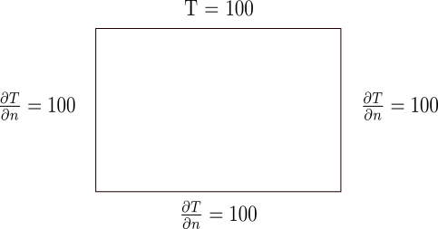
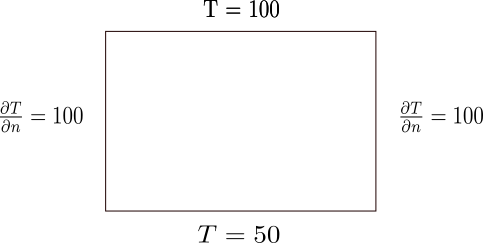
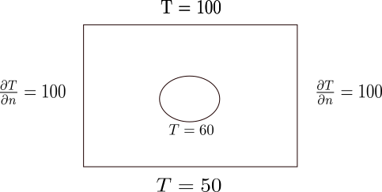

Laplace Equation
\[ \Delta T = 0 \]
Laplace Equation, in its purity, models steady state temperature distribution given boundary conditions. But Laplace equation can also be used to smooth propagation of boundary informations to interior of a domain.
Try to solve these exercise on OpenFoam.
Exercise 1:
Solve for the steady state temperature distribution on a plate of dimension 2m by 1.5m, whose upper boundary is fixed at 100 deg, and all other boundaries are insulated.
Exercise 2:
Solve for the steady state temperature distribution on a plate of dimension 2m by 1.5m, whose upper boundary is fixed at 100 deg, bottom wall is fixed to 50 deg, and all other boundaries are insulated.
Exercise 3:
Solve for the steady state temperature distribution for the problem shown below.
